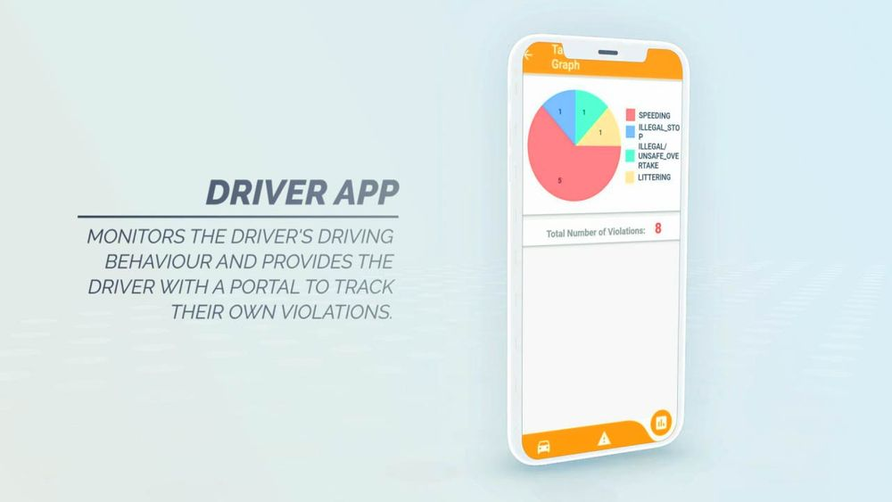
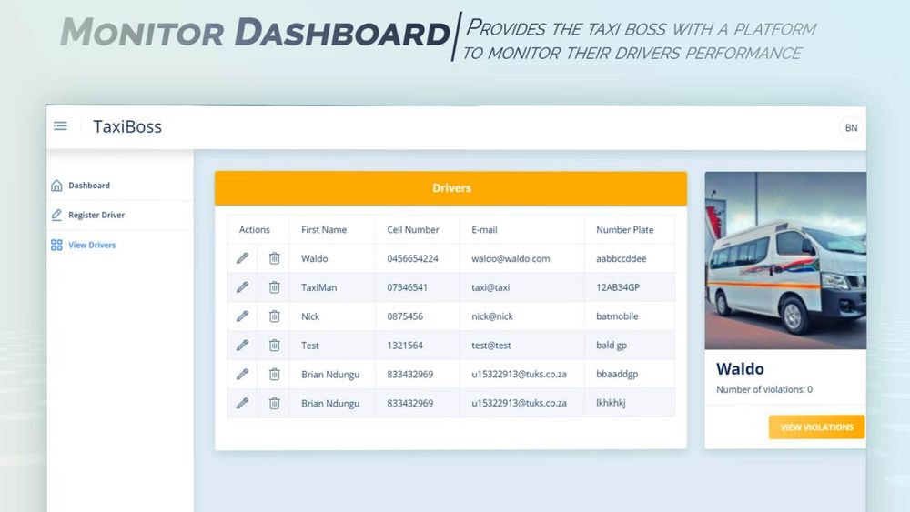
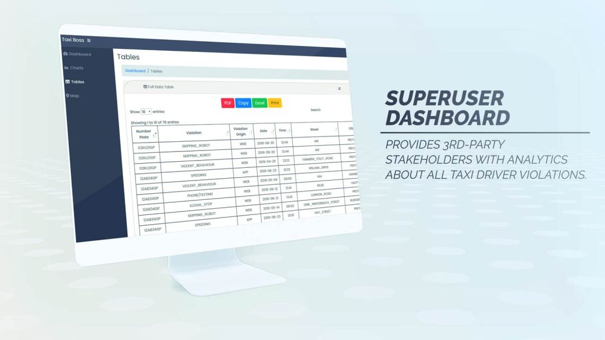
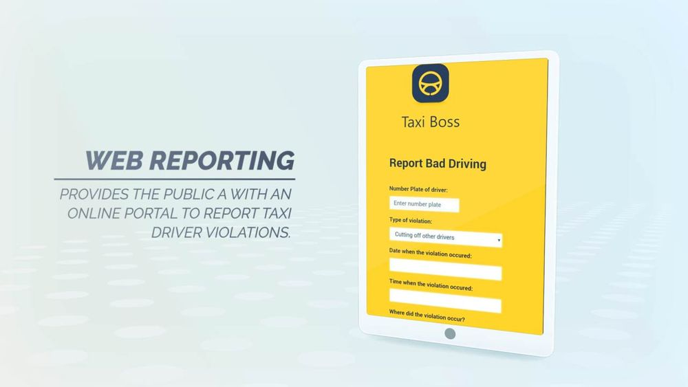
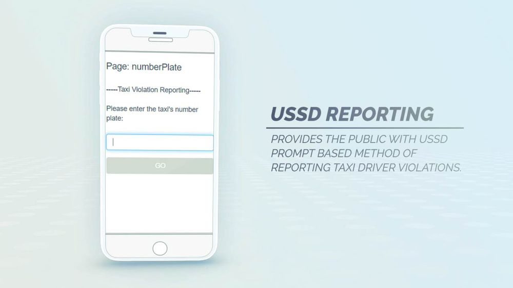

What is Taxi Boss?
Introduction
Taxi boss is an incentive-driven platform primarily oriented around the monitoring and assessment of taxi driver behaviour. This is done by providing analytics about driver behaviour to the relevant stakeholders in order to inform the judgements of taxi drivers with bad driving behaviour. The objective behind its conception is to make provisions for making our roads safer.
Our system helps our client achieve that goal. Taxi Boss puts the power back into the public's hands. It allows the public to send in reports of traffic violations through our reporting website. This data is then gathered to create profiles of the drivers. The monitor can view the performance of each of their drivers and add and remove drivers. Our Super User system allows third party organisations such as Insuarance companies to use the collected data to decide on insurance premiums and helps the Road Works Organisations improve road designs on roads with recurrent reported traffic violations. Lastly, our driver app allows the driver to view their performance and it also automatically detects and reports speeding violations.
| Access Point | Description | |
|---|---|---|
| Taxi Driver App | Used by the driver in order to view existing violations and provide automated violation reporting based on the device's location based data. | |
| Taxi Monitor Portal | Used by the taxi group owner in order to monitor and analyse the performance of taxi drivers registered to them. | |
| Superuser Portal | Used by the third-party stakeholders in order to monitor and analyse the performance of all taxi drivers. | |
| Web Reporting Portal | Used by people reporting a violation with access to internet in order to report a violation. | |
| USSD Reporting Portal | Used by people reporting a violation through USSD prompts in order to report a violation. |
Taxi Driver App
The taxi driver app’s main objective is to provide the driver with the ability to track and be notified of any violations related to them and to automatically report violations to the system using the smart phone’s sensors. This meant that the app had to be designed to be non-intrusive and intuitive and had to be a native application instead of a web application. With all of this in consideration, we chose to develop this system with Flutter due to it being a cross-platform framework that works well with native mobile technologies.
Monitor Portal
Returns the status of whether the OTP - that had been previously generated - and PIN - that has been sent in the request - match.
Portal URL: Monitor
Superuser Portal
Portal URL: Superuser
Web Reporting Portal
Portal URL: Web Reporting
USSD Reporting Portal
USSD code: (ask for code due to limited credits)
Challenges
Looking back, we noted that the initial phase was a difficult time for our team. From not really knowing each other, to losing a team member, to adjusting to software requirement changes. These challenges brought up quite a bit of doubt and uncertainty, which made development very difficult for us, because we weren’t certain whether we were doing was what we were supposed to be doing.
We all came into this project with a lack of experience in real-world product development, having only dabbled in making static websites, algorithmic coding and very basic web app development. The assumption that developing a multi-platform based system like this didn’t seem too difficult. This ignorance was born from the surface level research that we had performed during our tendering stage. Once our bid was won, and we delved into more research regarding the appropriate technology stack, we began to realize that the extent of the complexity of building and integrating multiple platforms was fully comprehended.
Once we had chosen our technology and the development had finally begun, issues relating to the scope, feasibility and ambiguity of the client’s requirements surfaced. This led to completely redesigning the system halfway through our development schedule, while developing in languages and technologies we were all unfamiliar with. Nevertheless, this didn’t stop us, in fact it pushed us. And we believe that it worked particularly well because everyone in the group was proactive and took initiative. It showed us how we were all capable of adapting under pressure, maintaining composure and becoming great software engineers.
Our team motto was “From 4 to 1 cause of COS 301” and we feel like that is exactly what we embodied during this project.